How to build a Platformer¶
In this tutorial, we will be building a 2D platformer from scratch using the spygame library.
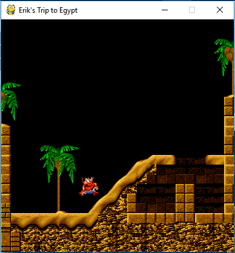You will need the following software and files to follow along with the different steps:
- The “Tiled” editor to create spygame’s level-tmx files. A level-tmx file contains all necessary information for spygame to build a complete level, i.e. background and foreground graphics, objects that the level will start with (e.g. player, enemies, traps, elevators, ladders, etc..). You can download Tiled from here.
- The spygame library: See our Quick Setup Instructions for all necessary details on how to get and install spygame.
- Some asset files: Download the following two folders into the directory, in which you would like to develop the game. This will be the directory, in
which we will write the platformer_2d.py file (the only python file we are going to create and write to in this tutorial).
- images/ (from here)
- data/ (create this as an empty directory, we’ll be populating it from scratch with a level-tmx and several tsx (spygame SpriteSheet) files)
Level tmx-files¶
Our first step in building a platformer will be to create the level as a so called level-tmx file. A level-tmx file is a just a regular tmx file (which is a type of xml) that can be opened and edited with the Tiled editor, but that also abides to certain spygame specific requirements. Let’s start by opening the Tiled editor.
We click on File->New
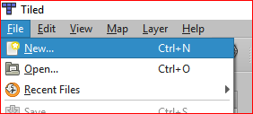{kind=link}
We specify our tile settings to be 24x24 tiles, with 16x16px for each tile.
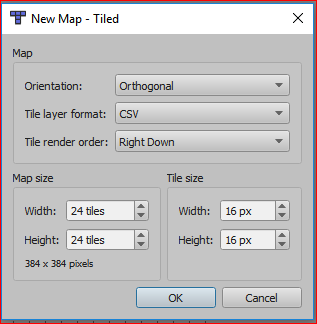This is what our empty level should now look like:
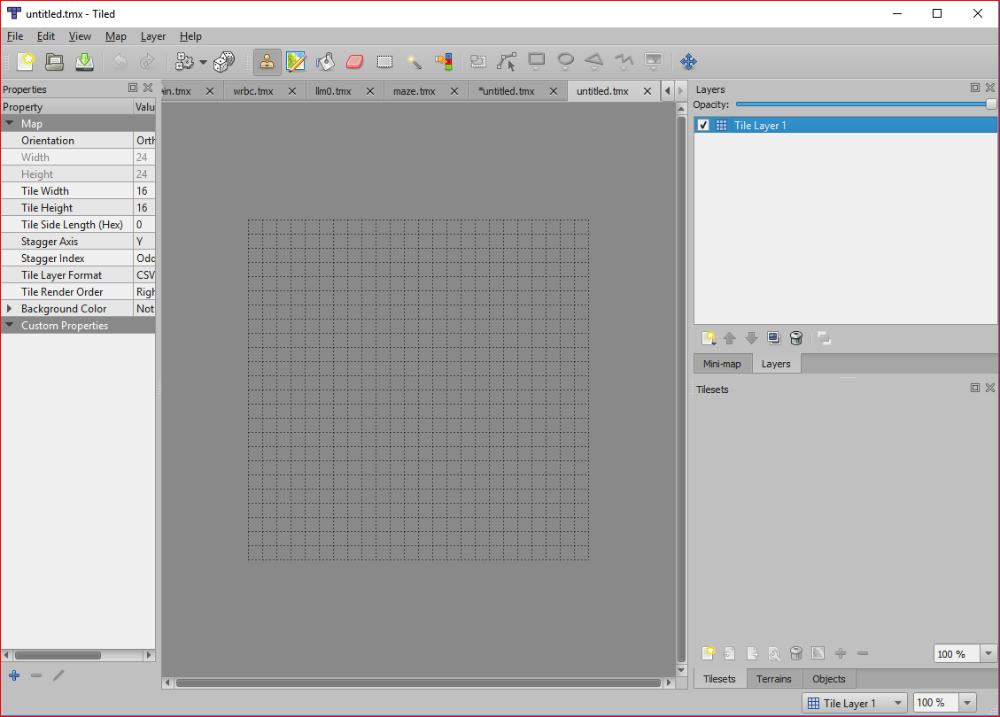{kind=link}
We click on File->Save As and store the newly created tmx file as “mylevel.tmx” in our project folder, where we already have the images/ folder nicely set up.
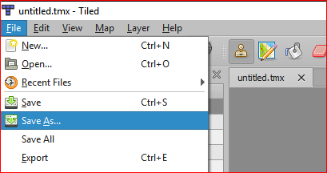{kind=link}
Layers¶
It’s time to work on our first layer of our level. A layer is a group of tiles that all have a common purpose and that - if the layer is visible - get rendered at the same time. The most commonly used layers in a level are “collision layer”, “background layer”, and “foreground layer”. The collision layer is usually not visible (not rendered), the background layer usually gets rendered first, followed by the game objects (the player, enemies, etc..) and the foreground layer, which gets rendered last (so it’s in the foreground). Let’s start with the collision layer.
Important Note: For the following, make sure you have the View->Views and Toolbars->Tilesets, Objects, Layers, Properties, Main Toolbar, and Tools all checked to be able to see your new tileset (and some other things we need later) in the editor. The tileset we are about to create and setup is a generic tileset that we will use to build our collision layer. Tiles in this layer will not be rendered in the game.
There should already be one layer in the just saved tmx file, called “Tile Layer 1”. We will rename this layer now to “collision” by double clicking the layer in the Layers panel.
The Collision Layer¶
The collision layer defines the location of walls and floors of our level. The players - and usually also the enemies - will collide with the single tiles of this layer and thus cannot cross the barriers defined by it. This is where we will start: We will paint the floors and walls that make up our level.
We click on Map->New Tileset and then on the Browse button to select an image that we will turn into a tileset.
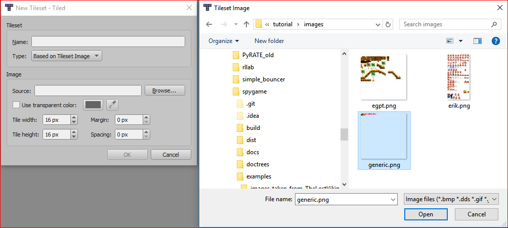A tileset is simply an image file that can be further split (horizontally and vertically) into “tiles”. For example:
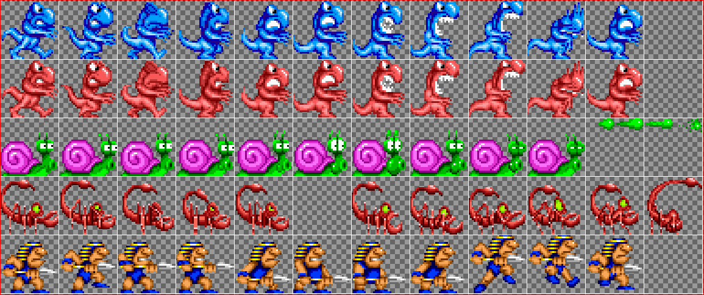{kind=link}
From the images/ folder in our project, we now select the generic.png file and click on Open.
We will leave the Tile width/height settings at 16px each (this will be the size of all our tiles used for layers in this level) and click on OK. We should see the following now in the Tilesets panel. Our new tileset has 18 usable tiles including the very first empty one. The tiles on the first row we will use to create walls and (sloped) floors. The tiles in the second row exist for other purposes (like defining a watery surface, an exit, etc..).
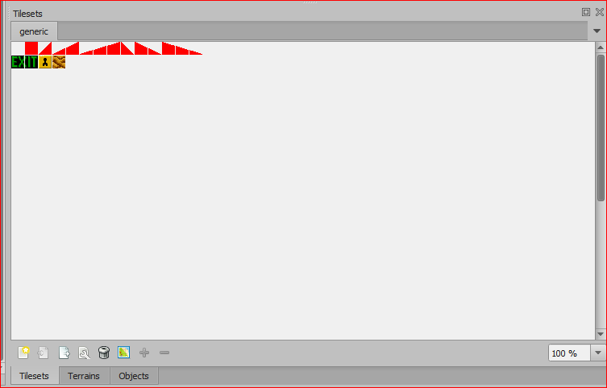{kind=link}
Modifying Tilesets and Adding Properties to Single Tiles¶
Next, we will add some properties to some of the tiles in the “generic” tileset so that spygame can recognize these tiles as proper collision tiles and make sure its physics engine gets the idea of walls, floors and slopes.
If you right click on a tile, you can select Tile Properties and then you see in the Properties panel that the tile already has the fixed properties ID, width and height. Width and height should both be 16. We won’t really care about the ID property.
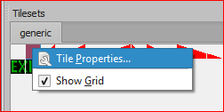We right click on the full red square tile and then click on the plus symbol in the properties panel to add a new custom property. We will call the property slope and set its type to float and its value to 0.0. We add another property called offset (float) and set its value to 1.0. These two values basically describe the slope function for that tile. The slope function returns a y value (vertical axis) for each x-axis (horizontal axis) value. For a fully filled tile, this would be y=0x+1, where o is the slope (no slope, no change in y dependent on x) and an offset (y-axis intersection) of 1. A 45° up-slope would therefore have the values slope=1.0 and offset=0.0 (y=x). A 45° down-slope will have slope=-1 and offset=1 (y=-x+1), etc.. This way, we are able to define any arbitrary slopes.
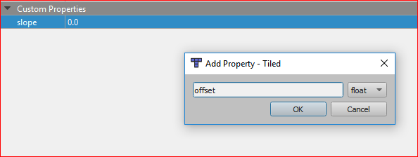 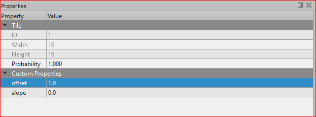We will later add custom properties also to the other tiles in the generic tileset, but for now, the fully filled red square will be enough to get us started.
Press B to activate the stamp brush tool (make sure the red square tile is still selected in the “generic” tileset). Paint a floor at the bottom of the level just like this:
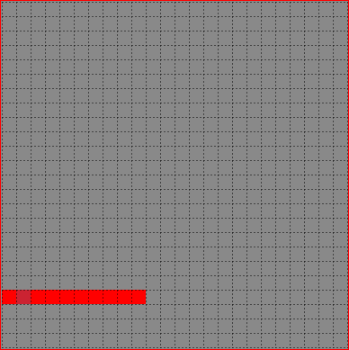Then paint a wall, some stairs, a hole and other structures like this (still only using that one red square tile):
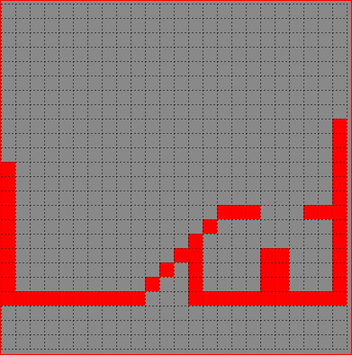Finally, we need to let spygame know that the layer is a collision layer. Therefore, we will create a custom property on the layer itself (not on any tiles in a tileset!). We single click on the “collision” layer in the Layers panel and then on the plus symbol in the then showing layer properties in the Properties panel. This adds a new custom property to the layer. We will call the property “type” (string) and give it a value of “default”. The type property for layers (as well as - later - objects), determines the collision behavior or our spygame game objects. And “default” here just means, well, normal, like a wall or a floor are normal things to collide with. We will later get to know the types “friendly”, “one_way_platform”, “dockable”, “particle” and many other custom ones that we can define (and combine with each other) ourselves.
And this concludes our collision layer. Next, we’ll add some nicer background and foreground graphics to our level.
The Background Layer¶
Let’s do the background layer next.
We click on Layer->New->Tile Layer and rename the newly created layer in the Layer panel to be called “background”.
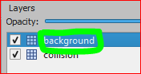This time, we will not add a “type” property to the layer as the type will default to “none” (or 0), which means the layer won’t be considered for any collisions. However, we do need to set the “do_render” (bool) property and set it to true (tick the box next to the newly created property). We also need to specify a “render_order” (int) property and we will set that to 10 to make our background render quite early. The “do_render” tells spygame that a layer should be rendered (the default for layers is false (remember the collision layer, which was not rendered and where we didn’t have to set anything)). The “render_order” is just an int that defines the order in which a rendered layer object should be rendered. The lower the render_order, the earlier the object gets rendered. Values can be chosen freely, but should be between 0 and 100, in order to keep some convention.
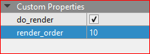Next, we paint the details of the layer and therefore we will need another tileset (we need nicer tiles than the ones in the the “generic” tileset). We create a new tileset (just like we did before with the “generic” tileset) based on the egpt.png file in the images/ folder:
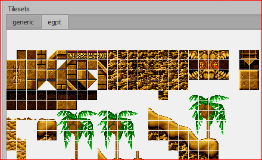Make sure the background layer (and not the collision layer) is selected. By selecting more than one tile in the new egpt tileset (Tilesets panel), you can create a larger brush and paint the level in fewer steps utilizing the already given relations between the different tiles in the tileset. E.g.:
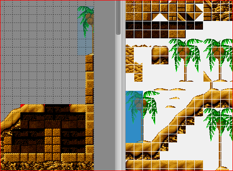Using the brush tool (press B) and maybe the eraser tool (press E), we can now draw our background layer. I recommend moving the background layer on top of the collision layer in the Layers panel to be able to draw over the collision layer (and make the collision layer slowly disappear behind the new background tiles). Don’t worry, since you have selected the background layer, you will not erase anything in the collision layer. Only the currently selected layer gets changed. Try to draw a background like the one in the image below:
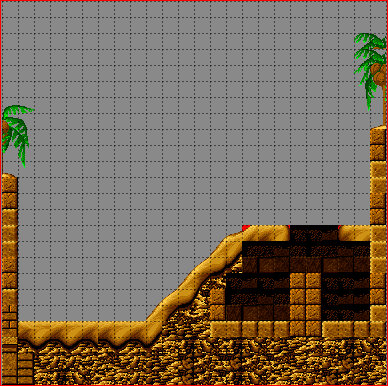Your background doesn’t have to look exactly like ours. Remember that the background is solely for graphical purposes. It won’t have any effect on collisions, wall-, or obstacle design. This concludes the work on our background layer. Next, we will add a palm tree to a new foreground layer to create the effect of the player moving behind the tree.
The Foreground Layer¶
We will now create yet another new layer similar to the background layer. Click on Layer->New->Tile Layer and rename the newly created layer into “foreground”. Then click on the foreground layer in the Layers panel and create the custom properties: do_render(bool)=true as well as render_order(int)=100. 100 Makes sure that the foreground is rendered last. Everything we create now with render_order between 10 (background) and 100 (foreground) will seem to be between these two layers and allow us to create the typical pseudo 3D effect of all 2D platformer games (we will later even add a so called “repeater”, which will strengthen the pseudo 3D effect even more).
Make sure the foreground layer is selected in the Layers panel and select any palm tree you like from the egpt tileset, then brush the palm onto our foreground:
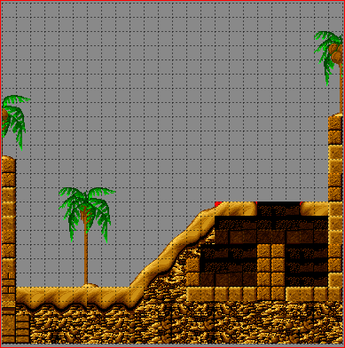This concludes all our tiled tile layers (collision, back- and foreground). Next we will introduce a new type of layer, the so called “tiled object layer”. These allow us to populate our level with game objects, like the player, enemies, elevators, etc..